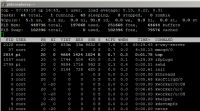

I've been looking for a while for a better option to replace my Raspberry Pi and within everything I 've looked I've only found one product that really get my attention and deserves to be mentioned here due to its good balance between price and capabilities.
The device that I have found is the CuBox-i, this mini computer seems to be the best option to the Raspberry Pi. Within the four options presented by SolidRun the best choice for my is the model CuBox-i2Ultra.
I find interesting that for the normal price (U.S. $104.99) this product promises to me to be a media center and a (OR controller) at the same time within a certain price range.
See the (CuBox-i) comparison tables here.
I've not really had many problems with the Raspberry Pi but now I want to experiment something new and that actually offers me more possibilities and better performance with my OR controller.
I have two general questions:
1 -
Which is the best option to run OpenRemote on Linux (Ubuntu, Fedora or Debian), because I 've found some aspects on the OpenRemote forums that make me think that OpenRemote on Linux is something complicated.
2 -
Does anyone have any better suggestions to run OpenRemote on other mini computer which is in a price range of €70 to €100? (other than Raspberry Pi)
Attached to this are some links with useful information about the CuBox-i.
Video -1
Video -2
Comparison Chart other devices
{kind=link}
|
Looking at this table: http://cubox-i.com/table/ 1) Which aspects regarding Linux did you find? 2) The CuBox indeed sounds really promising. Some community members are looking at beagleboard also: http://beagleboard.org/ |
|
Hi Marcus, 1) 2) Could you tell me which version of Linux you personally recommend to run the controller? I've looked at the beagleboard and I think it's a good product for the price, but nevertheless I tend more by CuBox, "personal opinion". |
|
If you are fine with Linux, go ahead. Fell free to post some feedback |
|
Marcus, Thank you for your clarification, soon I'm going to buy the CuBox and I will tell my experience. |
|
Hello Eduardo, did you buy the CuBox PC and did OR controller deployment work? I am interested in your answer, because my OR controller on a RPi is quite slow and as soon as I insert some graphics into the GUI the RPi does not work anymore. Marc |
|
Hi Mark, Yes, I bought the CUbox, I have not received the CuBox yet because SolidRun has had some delays but I think in early February should be coming. I bought the model CUbox-i2Ultra but the difference between this and the CUbox-i2 is mostly in the graphics, this means that in terms of performance for OR there should be no difference between model i2 and i2Ultra. I acquired the mofel i2Ultra because I want to experiment more with my XBMC and I found striking the InfraRed Receiver & Transmitter, the RTC and Battery Backup and the With WiFi + BlueTooth integrated. I think for those who simply want to use the CUbox as replacement of alternative to the Raspberry and to get more performance with OR, the model i2 is a god i2 choice. As soon as I receive the CuBox and install OR, I will be sharing my experience with the community. Eduardo |
|
Hello Eduardo, Did you receive your Cubox-i2 Ultra yet? Does OR run smoothly on the Cubox-i? My Raspberry-Pi is becoming to slow for my OR setup and I am looking for a good alternative. Regards, Nico |
|
Could you share a bit of your setup/experience with us? (what type of devices, and how many; number/complexity of rules etc?) Would be useful for future raspberry users |
|
Hi Kluin, Yes, I already received the CUbox-i2ultra. OR works well but I don't think it necessary to acquire the model Ultra to run the controller. SolidRun has discontinued the model "i2Ultra" but the model "i2" should be enough to run the controller smoothly. I believe that there are many alternatives to run the "Controller" smoothly with a budget under $100. Here you can find some Single-Board Computers You should ask the people who use the "BEAGLEBONE" or "Cubieboard". These miniPC can also be a good alternative to the Raspberry Pi. I want to to hear the experiences of these users because I'd like to keep experimenting with new miniPC's |
|
Eduardo, haven't you considered to use eBox which is supported by OpenRemotePro? |
|
Hi Michal, Yes, I have considered the eBox but the truth is that for me is important to experiment with miniPC's or Single-Board Computers with a budget under $100 dollars. Also I think that if the "controller" could be installed on Android, the possibilities to reduce the cost of the console to run the controller would be quite interesting because of the amount of devices on the market that run on android for a budget under $100 dollars. (An interesting case is the console (Boss) from Webee). Do You think that it's possible to create an Android image of the controller to be installed directly on an android miniPc in the same way as the Linux image of the controller for the eBox?. |
|
If you have root access to Android, you can get this to work. I already tried this once and after installing some missing libs I was able to install a normal Java JRE which was able to run the controller. Android is nothing else then a stripped down Linux and the UI running in a special VM |
|
Hi Marcus, You're right! Right now I don't have too much time to immerse myself in this topic but it seems very interesting and maybe I can work on it if I can find some time. |
|
I don't remember but I think it was libc which had to be upgraded and some related stuff. |
|
Pieter, When rereading this thread, I wonder if your question was intended for me. Because my Raspberry PI is still not very responsive (very slow actually) I summarise my set-up: controller on RPi (model B) which connects to KNX via an IP gateway (including light, thermostates, security, floor heating, etc), RRD4J temp graphs, T24 (still experimenting), Denos AVR (still experimenting) and Sonos. I have appr. 500 commands, 200 sensors, 150 switches/sliders. Very limited use of rules. I have a iPad panel with 12 screens, iPhone panel with 10 screens. The iPad screens include 3D floorplans of the house with all the switches, lights, etc 'on' it. Experience: at the start everything was perfect... but with the heavy use now:
I wonder what the impact would be if I would replace the RPi with a more capable machine e.g. Cubox-i with quad core and more memory. I have looked at the Openremote eBox Pro but it has also limited memory/CPU. I wonder if this is enough. And because I intend to add extra functionality like 1-wire temp/humidity, Z-wave power consumption measurement, T24 SIP, streams from Mobitix camera's (not possible in current iOS app), more graphs, I assume I need to increase computing power a lot. Maybe you have any ideas which could help improve the performance on RPi or suggestions on which machine to move to. Another thing I will need to determine is the speed (or lack of speed) of the KNX IP Interface. This might also prove to be an important bottleneck. Maybe anyone has any thoughts on how to improve this in changing the KNX (ETS) configuration? PS If I have correctly understood I will have to do all my configuration all over again when moving to the pro-version because I can not import my free designer account.... that does not encourage me to move to the pro-version |
|
Nico,
|
Eventually, that would be the goal. And that's partially a reason why the export/import hasn't been deployed to Pro, because the implementation we have so far would make that transition too problematic. So we want to find a solution that will work long term. |
|
Impressive setup. Curious about the comment that the Mobotix cameras can't be displayed on the iOS app. Can you elaborate a bit there ? If you camera can provide for an MJPEG stream, then using a webview on your UI should work with the iOS console (I've done it using the Mobotix T24 and some Pelco IP cameras). |
|
Hi Nico, It's quite an impressive application you have! Would you be interested writing about it in our newsletter? Would also be great to see some pictures! You can reach me at pierre-at-openremote-dot-org |
|
I have a KNX system setup on a QNAP NAS running Linux. I also have "Use Local Cache - Occured unknown error, satus code is 0" in >75% of the cases I want to quickly "control my house". I then have to go back to settings, refresh... That takes about 2 minutes each time, so currently, the system is not really usable Any ideas what causes with status code 0 error? |
|
This could be a timeout from the console if the controller does not answer quick enough. |
|
Yes, that sounds like coming from the communication code that is in the iOS console currently in the AppStore. This is being reviewed for the next version, so hopefully that will be fixed. |
|
Eric, I am using the webview on iOS but when opening the screen with the webview the picture I get is static. There is no streaming of the image. Because you mention you are also using the T24(mjpeg). Could you point me to the correct parameters to use in de T24 url to get a streaming image please? Also I am looking how to signal a doorbell ring to the iOS console. Because it is not possible to change screen based on events, I wonder if a sound would be possible? Have found 'text to speech' in the forum but assume this would then trigger sound on de RPi not on the iOS console. Correct? |
|
This is the URL I used when testing in the past, don't have it running now to verify but just give it a try: http://<ip>/control/faststream.jpg?stream=full&fps=16.0 For the doorbell, unfortunately it's not possible at this time. Something interesting to add but I don't see it in the short/medium term. |
|
Nice. Any mile stones for the next release known yet? I can describe my issues maybe a bit more in detail:
Waiting for the next release though. |
|
Pieter, I have tested for a while with a Windows 7 Professional Dell Laptop with Intel Core i5-3437U, 4Gb RAM, 64 bit and it performed like lightning.
Downside for now: 65W AC adapter and a lot of the config on the Linux needs to be configured and figured out all over again; e.g. Sonos. Conclusion: I will start looking for a faster but low energy consuming Linux machine. |
|
 Good to see the comparison. I am not really surprised by the figures. For me the Raspberry is only a gateway to Z-Wave. The OR-controller runs on Synology DS 212+. |
|
On de RPi Top shows that Java is taking a lot of the resources. Java consumes appr. 60 - 70% of the CPU and 28,2% of memory. Not sure if this is alarming. |
|
On my DS212+ Java seemed to take between 1.3 -3.7% of CPU in a period of some 5 minutes. I don't know what that means. Have to leave that to the experts here. |
{kind=link}